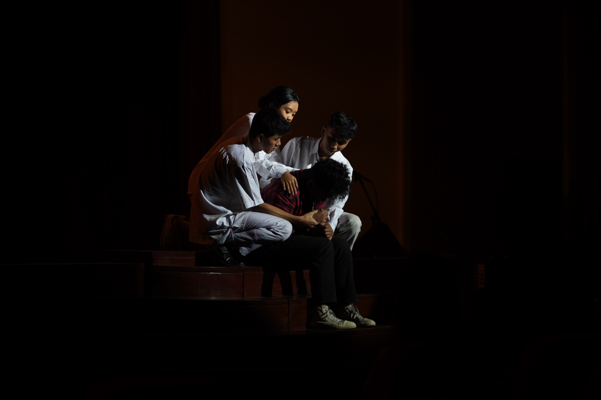
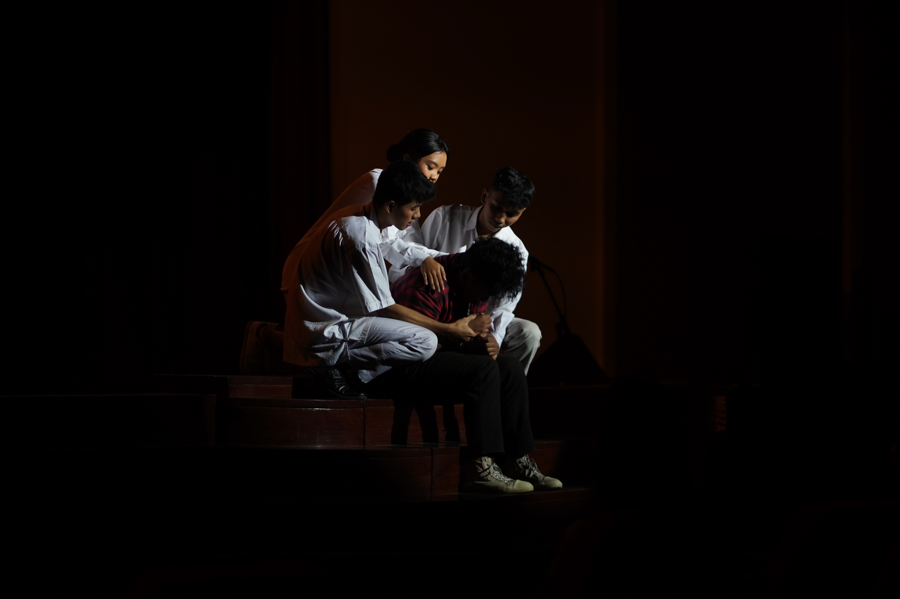
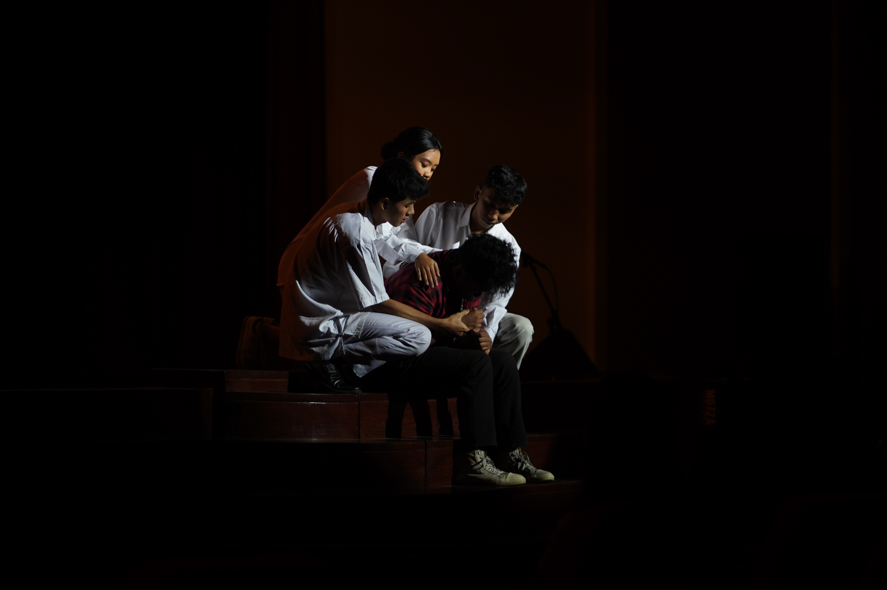

PROJECT

 



Spesialisasi: Potret dan Candidate
Lokasi:
Yogyakarta
Kontak:
Calvinkaguansage12@gmail.com | +62 812-5653-2515
Instagram:
@_clei._

| Pengalaman | Tahun | Deskripsi |
|---|---|---|
| Insadha | 2024 | Dokumentasi foto dari acara ospek, mulai dari awal hingga selesai. |
| It Days | 2024 | Dokumentasi foto dari acara Seminar,yang mana salah satu bintang tamu seorang youtuber bernama eno bening, mulai dari awal seminar hingga selesai. |